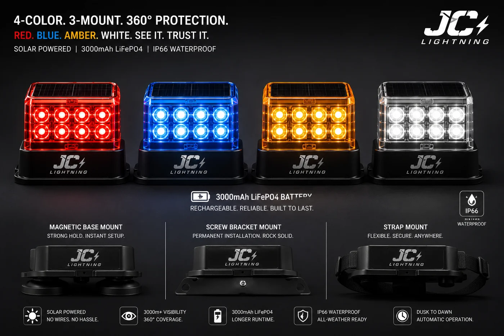

Solar Warning Beacon Light
A high-visibility solar beacon for roadworks, hazards and signalling — 6 bright LEDs in four colours, four flash patterns, 500m+ visibility and IP66 sealing, rated from –30°C to +60°C.

This is the safety SKU of the range — for roadworks, construction zones, vehicle hazards, marine markers and security patrols. Six high-brightness LEDs in red, blue, amber or white run rotating, strobe, steady or flash patterns visible from over 500 metres. It charges by sun, runs on LiFePO4, survives –30°C to +60°C, and mounts three ways so it deploys in seconds.
Specifications
| LEDs | 6 high-brightness |
|---|---|
| Colours | Red / blue / amber / white |
| Modes | Rotating / strobe / steady / flash |
| Visibility | 500 m+ |
| Battery | 3000mAh LiFePO4 |
| IP rating | IP66 |
| Operating temperature | –30°C to +60°C |
| Mounting | Magnetic + screw + strap |
| Certification | CE + RoHS |
Why buyers choose it
Seen from 500m+. Four colours and four flash patterns cover road safety, security and signalling use cases from one product.
Three-way mounting. Magnetic, screw and strap options mean instant deployment on vehicles, barriers or poles.
Extreme-weather rated. IP66 and –30°C to +60°C operation for the harshest sites.
Certified & OEM-ready. CE + RoHS with every quotation; colour and branding customisable.